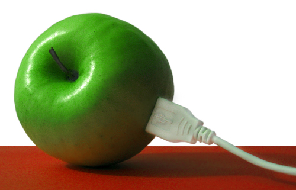

Modern Mounting with Udisks2
In this post we look at the changes in disk mounting and then look at the udisksctl command which allows you to automount disks from the command line. Feel free to skip past the background info if you just want to learn how to use the command.
Background
In the beginning (Thursday, 1 January 1970?) to add a storage device (such as a hard disk) to a computer was an infrequent affair, and required the machine to be turned off.
So the classic system of disk mounting on a Posix (‘Unix-like’) system was for the system administrator to list all the disks in a plain text file systems table, which on most systems can be found in the file /etc/fstab.
Nowadays servers often have the ability to add and remove disks without turning the machine off. Even in desktop computers, SATA drives have this facility too at least according to the SATA drive - but it depends a lot on the manufacturer of motherboard controller actually following the standard so it is not usually worth the risk.
The main thing that has really brought hotplugging into use is external disks such as USB drives and other trendy connectors that come and (mostly) go such as Firewire, eSata, Thunderbolt, etc.
In the early 2000s, the first attempt to cope with this was called HAL - Hardware Abstraction Layer, which did what it said on the tin, provided a layer between device nodes and the user of the nodes, so storage devices (and other hardware) can be added and removed without rebooting this system and without rewriting the /etc/fstab file.
Then everything gets replaced a dizzying number of times (DeviceKit, devfs, etc) as better approaches are discovered in a fast moving period of hardware development, udev eventually won and was the main thing for the rest of the decade.
When a device is added or removed from the system, the Linux kernel notices and sends out an event. Udev is a daemon that waits around listening for these events and then responding accordingly. udev runs in user space not kernel space which is good for security as you cannot plug in a USB stick and take over the kernel like on some proprietary operating systems.
In 2012, the udev project merged into the systemd project; systemd is the next generation (or current generation for some distributions) system and service manager. Systemd is really cool and is being adopted by most of the major distributions but it is still a year or two away in some cases depending on their release cycles.
Anyway, the point is that if you want to control disks on the command line and you are using the mount command you are 20 years out of date. Enough history, lets get to the flesh.
Command Line Usage
When you hot plug disks in the system, the graphical interface automatically reacts and provides buttons to mount, unmount and so on. However, if you have accessed a machine remotely, or just like to use the command line, then this post will tell you how to use the same automounting approach as the GUI.
For a system controlled by udev (or systemd), one command line tool is called udisks. It has two versions, in the original version 1, the command is udisks, for the second version udisks2, it is udisksctl.
If you don’t have these commands already installed then you will have to install the udisks2 or udisks packages. In the case of the Debian distribution, udisks is in Wheezy and udisks2 is in Jessie. I seem to have both installed for some reason, possibly because I started at Wheezy and upgraded to Jessie.
Anyway, we will look at the newest one, udisksctl.
udisksctl
The main commands follow, there are several more that can be seen with:
udisksctl help
To see a list of disks attached to the system:
udisksctl status
For a very in depth list of disk information:
udisksctl dump
To mount a filesystem:
udisksctl mount -b /dev/sdb1
You don’t need to give a location, it will sort that out automatically for you. On my system it mounts the disk at /media/username/label where username is obviously your username and label is the label of the disk partition, other distributions may deal with it differently.
To unmount a filesystem:
udisksctl unmount -b /dev/sdb1
Note that the command is unmount with an N, not umount like the classic command.
Note that these command names autocomplete which is kinda cool.
udisks
The old udisks command is pretty similar except instead of giving a command name, you give an argument, e.g. to get the full disk information:
udisks --dump
Instead of status, it has –enumerate. This option lists partitions instead of physical disks like in the newer udisksctl.
Go forth and mount
So udisksctl is pretty cool, we can now mount and unmount disks from the command line in the same way as the GUI. Do remember that the disk information from the udisksctl dump command can quite be useful when wanting to know about the disks attached to a system.